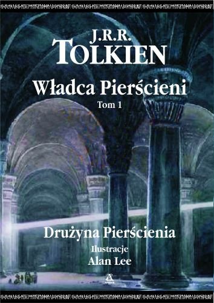
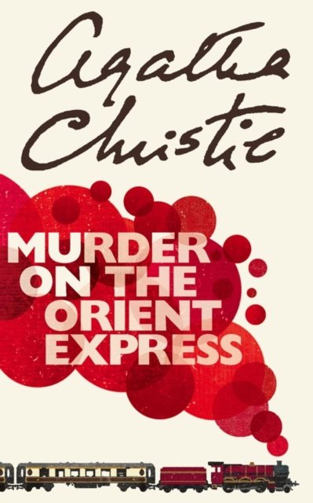

Raport Czytelniczy
Autor projektu: Hubert Strękowski (Indeks: 208381)
Podsumowanie Roku
Czytanie to dla mnie forma relaksu i poszerzania wiedzy.
- Redukcja stresu
- Rozwój słownictwa
- Rozwój osobisty
Statystyki za rok 2024
- Przeczytano: 35 sztuk
- Strony: 12 540
- Czas: 285 godzin
- Średnio stron na książkę: 358.29
Formaty:
Papier:65%
E-book:35%
📊 Analiza danych:
- Autor pierwszej książki:Tolkien
- Tytuł książki o ID 103:Sapiens: Od zwierząt do bogów
- Ile książek przeczytano:2
- Ostatnia pozycja na liście:Sapiens: Od zwierząt do bogów
- Długość tytułu pierwszej książki:38 znaków
Ulubione Gatunki
1. Fantastyka★ ULUBIONY ★
Światy magii, podróże w czasie i alternatywne rzeczywistości.
Autorzy:
- TPTerry Pratchett (brytyjska) [kluczowy]
- ULUrsula K. Le Guin (amerykańska) [wazny]
2. Kryminał
Zagadki, śledztwa i nieoczekiwane zwroty akcji. Skupia się na logicznym rozwiązywaniu złożonych spraw kryminalnych.
Autorzy:
- ACAgatha Christie (brytyjska) [kluczowy]
- RCRaymond Chandler (amerykańska) [poboczny]
Biblioteczka
Szybki indeks tytułów (A-Z)
- 1. Murder on the Orient Express (ID: 102)
- 2. Sapiens: Od zwierząt do bogów (ID: 103)
- 3. Władca Pierścieni: Drużyna Pierścienia (ID: 101)
| Lp. | Okładka | Tytuł | Autor | Wydawnictwo | Status / Ocena |
|---|---|---|---|---|---|
| I. |
 Zobacz recenzję (strona) |
Władca Pierścieni: Drużyna Pierścienia |
|
Zysk i S-ka Wydawnictwo Miasto: Poznań (Lokalne!) Rok: 1961 (wiek: 64 lat) KLASYK ISBN: 978-8377852360 |
przeczytana ⭐⭐⭐⭐⭐ (Wybitna) |
| II. |
 Zobacz recenzję (strona) |
Murder on the Orient Express |
|
Wydawnictwo Dolnośląskie Miasto: Wrocław Rok: 1963 (wiek: 62 lat) KLASYK ISBN: 978-8324578130 |
przeczytana ⭐⭐⭐⭐ (Dobra) |
| III. |
 Zobacz recenzję (video) |
Sapiens: Od zwierząt do bogów |
|
Rebis - Dom Wydawniczy Miasto: Poznań (Lokalne!) Rok: 2014 (wiek: 11 lat) ISBN: 978-8380624891 |
w_trakcie Jeszcze nie oceniono |